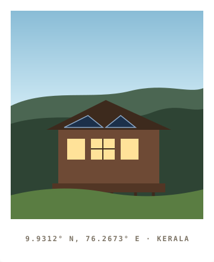
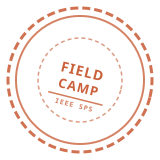
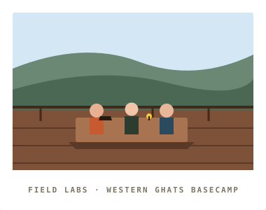

MOSAIC2.0
MOSAIC 1.0 is an unforgettable, relationship-focused humanitarian technology retreat in the hills of Kerala. Forget the artificial auditorium hackathon, leave the generic slides behind, and engineer cyber-physical systems that survive contact with the real world.

THE EXPERIENCE
MOSAIC makes its grand return this season in the scenic mountain valleys and backwaters of Kerala. Unlike a traditional tech conference or rushed 24-hour code marathon, this event does not revolve around sleepless nights in an artificial room packed with theoretical pitch slides.
Instead, we've taken the humanitarian mission into the field and made it the main event. Teams validate ground-truth community problems, receive dual guidance from technical architects and field practitioners, and build working cyber-physical prototypes that solve real-world problems.
This is the serious, adult version of a builder summer camp — engineered for humanitarian impact.


BUILT FOR CONTACT WITH REALITY
We deliberately rejected the quick-pitch format. Real communities need resilient physical solutions, not vaporware.
Community First, Technology Second
Teams must clearly profile their frontline beneficiary, document failure modes under rain, dust, or power cuts, and examine ethical deployment risks before building hardware.
Skill Equity by Design
8.5 hours of intensive capacity-building workshops across 6 cyber-physical layers are provided before the main hack so participants share common engineering preparation.
Reflection is Scored
The BrainStorm Round requires a comprehensive Humanitarian Learning Report. Deep reflection on field constraints and ethical responsibility contributes 20–25% of your final score.
THREE GATES. ONE SUMMIT.
Each phase acts as a qualification gate. Excellence in Phase 1 earns professional mentorship; success in Phase 2 earns your seat at the 3-day in-person mountain basecamp.
Phase 1: Online Idea Hack
Teams register and submit a rigorous problem validation dossier for one of the 25 problem statements. Focus on community empathy, field constraints, and SDG alignment.
Phase 2: HackTank Pitch
Shortlisted teams work directly with assigned technical and humanitarian mentors, refining cyber-physical system blueprints and pitching virtually to an expert jury.
Phase 3: 3-Day Offline Tech-a-thon
An intensive 55-hour in-person retreat in Kerala: 8.5 hours of hardware/AI labs, a 36-hour continuous hack sprint, BrainStorm report, and live jury stress testing.
Team Size: 2 to 4
Teams register together. The first registered participant serves as Team Lead and primary contact.
One SDG Track per Team
Teams select one primary track from the 7 UN SDGs. The specific challenge can be locked during Phase 1.
Priced Per Participant
Fees depend on individual IEEE membership status. Mixed teams pay the sum of individual rates.
THE FIELD TECHNOLOGY STACK
Six workshops functioning as the integrated layers of one humanitarian cyber-physical architecture.
GIS, Weather Intelligence & Remote Sensing
Set A (1.5 hrs)Multi-spectral satellite imagery, geospatial hazard modeling, and offline map caching for rugged terrain.
Edge AI & Computer Vision
Set B (3.5 hrs Hands-On)Quantized neural networks on microcontrollers, real-time object detection for disaster reconnaissance, acoustic anomaly sensing.
Offline-First & Resilient App Development
Set A (1.5 hrs)Mesh networking over BLE/LoRa, peer-to-peer data sync without internet, local CRDT storage, and emergency UI.
Embedded Systems & Sensor Integration
Set B (3.5 hrs Hands-On)Ultra-low-power microcontrollers, multi-sensor analog front-ends, environmental buses, and solar MPPT energy harvesting.
Rapid Hardware Prototyping & Digital Fabrication
Set B (2.0 hrs Hands-On)CAD for rugged IP67 enclosures, rapid 3D printing with PETG, PCB milling, thermal management, and weatherproofing.
Robotics, Automation & Control Systems
Set B (2.0 hrs Hands-On)Closed-loop motor control, autonomous rover navigation for hazardous terrain, fail-safe actuation, and sensor deployment.
25 PROBLEM STATEMENTS · 7 SDG TRACKS
Every challenge combines physical hardware, edge computing, and offline resilience to solve authentic humanitarian crises.
FIELD ASSESSMENT RUBRICS
Scored for ground-truth empathy, engineering durability, and genuine humanitarian insight.
Phase 1: Online Idea Hack Assessment
Evidence of genuine beneficiary identification and ground-truth failure mode analysis.
Alignment with targeted UN SDG indicators and measurable community improvement potential.
Pragmatic cyber-physical architecture integrating sensors, compute, and offline protocol.
Data sovereignty, fail-safe behaviors, environmental durability, and maintainability.
Phase 2: HackTank Pitch Assessment
Integration of critique from assigned technical and humanitarian domain mentors.
Detailed schematic coupling between hardware telemetry, edge compute, and user interface.
Procurement realism, sub-$100 BOM feasibility, and 36-hour sprint milestones.
Viability of post-hack adoption, repairability with local hand tools, and documentation.
Phase 3: Grand Finale & Live Jury Assessment
Tangible demonstration under simulated field conditions (dust, water splash, power drops).
Critical reflection on community empathy, ethical boundaries, and workshop synthesis.
Independent operation without cellular signals, battery endurance, and intuitive field UI.
Response to jury cross-examination, live fault tolerance handling, and team defense.
PRICED PER PARTICIPANT, NOT PER TEAM
Members of one team may belong to different pricing categories. Your total fee equals the accurate sum of each member's IEEE status.
IEEE SPS Members
Maximum subsidized rates for active members of IEEE Signal Processing Society.
General IEEE Members
Subsidized registration for active members of any IEEE society or student branch.
Non-IEEE Members
Open nationally to all recognized university and polytechnic college students.
COMMON QUESTIONS
BUILD SOMETHING THAT SURVIVES CONTACT WITH THE REAL WORLD.
Phase 1 registration opens soon. Form your team of 2–4 with at least one female member, select your SDG track, and prepare for the 3-phase journey.